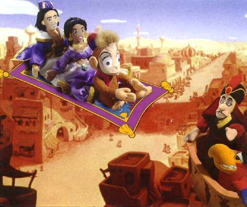
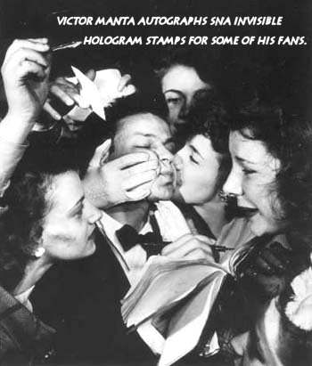
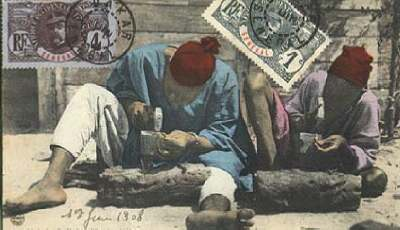
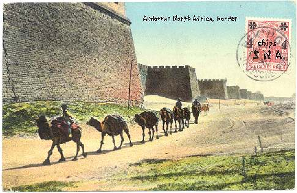
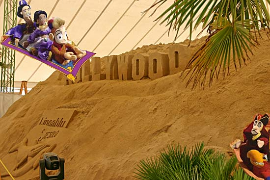
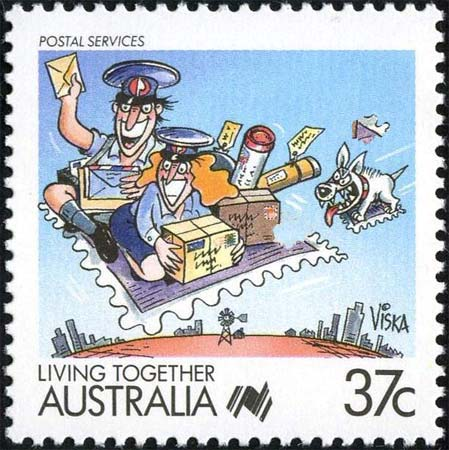

|
Created:
11/17/01. Revised:
01/07/06. |
|
|
|
Ruling for fun and fans
Most of the SNA Community's staff members are represented below. Information about some of those pictured on the gang's photograph can be found at the bottom of this page.

Below one can see one of the staff members during a difficult moment of his generally quiet philatelist life.

The tedious manufacturing process of the first hologram stamps.

Three of the SNA staff members at the inspection of the (always dangerous) Andorran North Africa Border. The ladies are following the caravan in the Fata Morgana car.

The staff members visiting the sand sculptures exhibition in Italy, in August 2005.

After Rodney, below is the Australian Arm of SNA at work.

.........and could that be "D.C" on the little stamp behind?
From a typical RCSD - SNA thread
Victor wrote:
Tracy, I'm
very upset that you haven't respected our convention and you have
posted the picture of the SNA staff! Imagine, yesterday, on a
crowded Global Express vehicle, about 20 young girls assaulted me,
asking for autographs and tearing my clothes in pieces. And
actually the whole thing for nothing at all, because I had no SNA stamps
in my pockets.
Victor
SNA Etiquette
Tracy
answered:
Sorry boss, but the
evil grin you had in the picture had to be shown to the public!
8^)
Tracy
Blair commented:
Especially since this
Blair is a MAN. %^O
|
Created:
11/17/01. Revised:
01/07/06. |
|